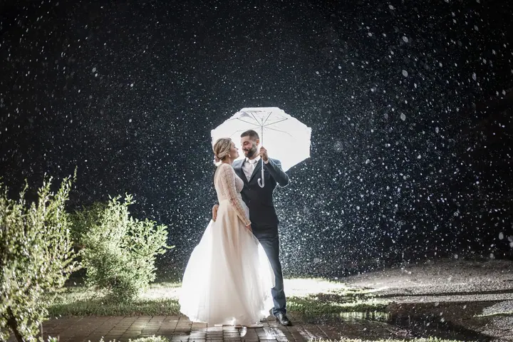
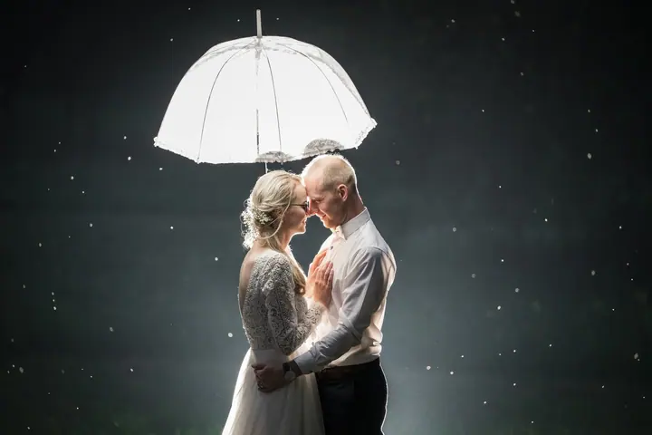
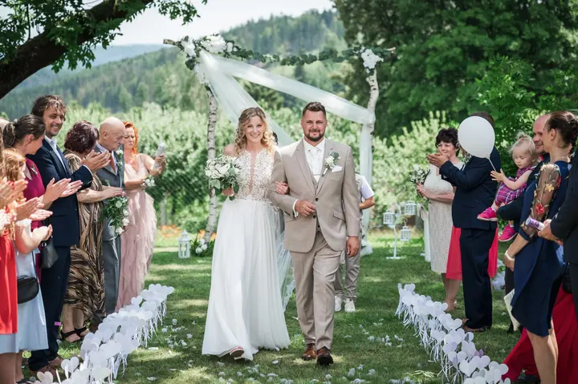

Svatební focení
Váš den zachytím od příprav až po večerní zábavu, podle balíčku i z dronu. U delších balíčků sestříhám svatební reel a předám vám ho ještě v den svatby.





Jmenuji se Lukáš Chadim a od roku 2012 fotím svatby v Přerově a okolí. Kromě svateb fotím rodiny, děti a páry venku v přírodě i ve vlastním ateliéru v Soběchlebech. Jde mi hlavně o skutečné emoce a fotografie, ke kterým se budete rádi vracet.
Více o mně
„Nečekám, že budete umět pózovat nebo vědět, co máte před fotoaparátem dělat.“
— Lukáš Chadim
Váš den zachytím od příprav až po večerní zábavu, podle balíčku i z dronu. U delších balíčků sestříhám svatební reel a předám vám ho ještě v den svatby.
Rodiny, děti, páry, těhotenské fotky i portréty v přírodě, bez strojených póz. Nejčastěji fotím u rybníků v Býškovicích, rád ale přijedu i na vaše oblíbené místo.
Focení ve vlastním ateliéru LukyFoto v Soběchlebech, se dvěma pozadími a trvalým světlem bez blikání. Od října do poloviny ledna si můžete vybrat i vánoční scénu.
Profesionální fotokoutek na svatby, oslavy, plesy i firemní akce, u kterého se hosté baví celý večer. Na svatbu nabízím i samoobslužnou fotobudku.
Fotografie jsou ilustrační
Svatbám se věnuji od roku 2012 a za tu dobu se jejich počet blíží ke třem stovkám. Fotil jsem malé rodinné svatby i velké celodenní oslavy, obřady na radnicích, v kostelech i pod širým nebem. Hlavně jsem ale zažil spoustu situací, které se na svatbě naplánovat nedají.
Během dne se snažím být tam, kde se něco děje, a přitom do průběhu svatby zbytečně nezasahovat. Momentky nechávám plynout, u skupinových fotek a focení novomanželů naopak poradím a navedu vás, aby to šlo rychle a v pohodě. Kromě fotek vám můžu zajistit i záběry z dronu, svatební reel, fotobudku nebo dýmovnice a jiskřivé fontány.
Jsem táta dvou malých dcer, takže vím, že u focení dětí a rodin nejde vždycky všechno podle plánu. Proto mi záleží na klidné a přirozené atmosféře. Zároveň chci, aby kvalitní focení zůstalo cenově dostupné co nejvíc lidem.
Volný termín si zarezervujete online a já se vám co nejdřív ozvu s potvrzením.
Probereme spolu průběh dne, místa a vaše přání. Před svatbou spolu průběžně komunikujeme.
Fotím od příprav až po večerní zábavu podle zvoleného balíčku. U delších balíčků dostanete svatební reel ještě ten den.
Všechny fotky v plném rozlišení najdete v online galerii s trvale platným odkazem. K celodennímu balíčku patří i dřevěná krabička s flashdiskem a 50 tištěných fotek.
Vůbec ne, většina párů, které fotím, podobnou zkušenost nemá. Při focení novomanželů vám poradím, jak se postavit a kam se dívat, ale celý den vás do naučených póz stavět nebudu.
Nejčastěji v okolí Přerova, Hranic, Lipníku nad Bečvou, Bystřice pod Hostýnem, Holešova, Kroměříže, Olomouce a Zlína. Za svatbami ale jezdím po celé republice i do zahraničí.
Krátké video z vašeho dne, které u delších balíčků sestříhám a předám vám ještě během svatby, takže ho můžete hned sdílet.
Upravené fotografie předávám obvykle do jednoho týdne od focení, často i dřív. Z jednoho focení dostanete přibližně 40 až 70 upravených snímků.